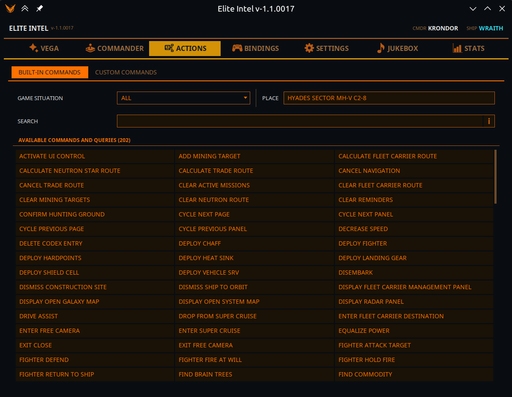
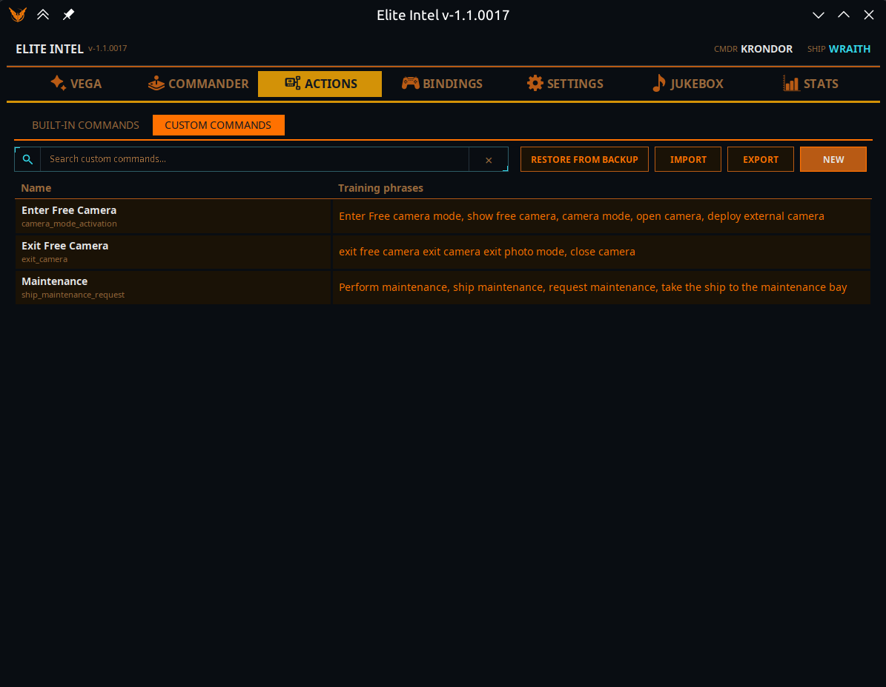
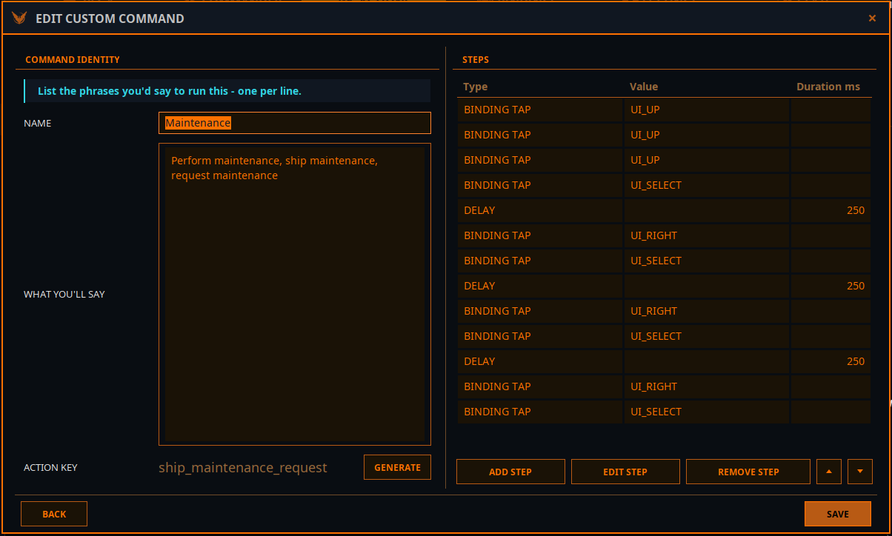

Вкладка «Действия»
 Всё, что умеет Elite
Intel, и всё, чему вы его научили. Две подвкладки: Встроенные команды и Пользовательские
команды.
Всё, что умеет Elite
Intel, и всё, чему вы его научили. Две подвкладки: Встроенные команды и Пользовательские
команды.
Встроенные команды

Это ответ на вопрос «что я могу сказать прямо сейчас?», а не только «что вообще умеет эта сборка?».
Выбор ситуации
Список вверху слева содержит ВСЕ, а также каждую физическую ситуацию, в которой вы можете оказаться: в корабле, в SRV, в истребителе, в такси, пешком; пристыкованы, сели, планируете, в сверхсветовом полёте, у кольца, на орбите, в глубоком космосе.
- Он следует за живой игрой: выйдите из корабля — и выбор сам перейдёт на Пешком, а список ниже изменится вместе с ним.
- Как только вы выбираете ситуацию вручную, он перестаёт следовать и остаётся там, куда вы его поставили.
- ВСЕ перечисляет каждое действие этой сборки, включая те, что недоступны там, где вы сейчас находитесь. Конкретная ситуация перечисляет только то, что применимо там.
Рядом поле только для чтения Место показывает конкретное местоположение, которое сообщает игра, — станцию, тело или систему.
Поиск
Простой буквальный текстовый фильтр по перечисленным действиям: их именам, ключам действий и произносимым фразам, которые их запускают. Что вы напечатали, то и ищется.
Это намеренно не маршрутизация компаньона. Диспетчер «Веги» ранжирует по смыслу, поэтому набранное там «найти» вытащило бы команды, не имеющие с ним ни одного общего слова, и не дало бы вам увидеть почему. Когда вы читаете список, вам нужен именно буквальный поиск.
Доступные команды и запросы
Единый объединённый список, отсортированный по алфавиту в три колонки, со встроенными действиями, вашими макросами и запросами для выбранной ситуации. Пока вкладка открыта, он обновляется вживую по игровым событиям.
Дважды щёлкните любую запись, чтобы открыть её подробности.
Подробности команды
| Поле | Значение |
|---|---|
| Имя команды | Понятное человеку имя |
| Ключ действия | Внутренний идентификатор — именно это имя видит языковая модель |
| Тип команды | Встроенная привязка (нажимает клавишу) · Встроенное действие (делает что-то в приложении) · Встроенный запрос (отвечает на вопрос) · Пользовательская команда (ваша) |
| Описание | Что она делает |
| Обучающие фразы | Произносимые фразы, ведущие к ней, на вашем текущем языке |
Три кнопки:
- Запустить — выполнить прямо сейчас из приложения, без голоса. Если команда принимает параметры, сначала появится небольшая форма.
- Предложить исправление — открывает заранее заполненную задачу на GitHub с идентификатором команды, вашим языком и текущими фразами, чтобы вы предложили более удачные формулировки для своей локали. Именно так становятся лучше неанглийские наборы фраз; пожалуйста, пользуйтесь этим.
- Закрыть
См. также: Все команды.
Пользовательские команды

Ваши собственные макросы — именованная последовательность шагов, запускаемая тем, что вы говорите. По духу похоже на VoiceAttack, но сопоставление идёт по смыслу, а не по точной фразе.
Таблица перечисляет Имя каждой команды и её Обучающие фразы, а над ней расположено поле поиска.
| Кнопка | Что делает |
|---|---|
| Новый | Создать команду |
| Изменить | Изменить выбранную команду |
| Удалить | Удалить выбранную команду (с подтверждением) |
| Экспорт | Записать выбранные команды в файл, которым можно поделиться |
| Импорт | Прочитать команды из файла. Ваш текущий набор предварительно резервируется |
| Восстановить из резервной копии | Вернуть набор, заменённый импортом |
| Открыть папку резервных копий | Открывает папку на диске |
Если при запуске файл пользовательских команд когда-либо окажется повреждённым, Elite Intel автоматически загрузит резервную копию и сообщит вам об этом.
Редактор команд

Идентификация команды
| Поле | Примечания |
|---|---|
| Имя | Как вы её называете |
| Описание | Что она делает |
| Что вы скажете | Фразы, которыми вы бы её запускали — по одной в строке |
| Ключ действия | Внутренний идентификатор. Нажмите Создать, и языковая модель напишет его за вас на основе ваших фраз. Он должен быть в ASCII snake_case, потому что становится именем инструмента, которое видит модель, — так что доверьте это кнопке «Создать». Перед созданием добавьте хотя бы одну фразу |
Шаги — последовательность по порядку. Шаги можно добавлять, изменять, удалять и перемещать вверх и вниз.
| Тип шага | Поля | Для чего |
|---|---|---|
| Нажатие привязки | Привязка | Один раз нажать назначенный элемент управления |
| Удержание привязки | Привязка, длительность в мс | Удерживать назначенный элемент управления |
| Задержка | Длительность в мс | Подождать между шагами |
| Произнести | Текст | Заставить «Вегу» что-то сказать |
| Нажатие клавиши | Нажатие клавиши, модификатор | Нажать клавишу, ни к чему не привязанную в игре |
Где возможно, предпочитайте шаги типа Привязка шагам Нажатие клавиши: привязки следуют за теми клавишами, которые игра действительно использует, и потому переживают переназначение элемента управления.
Как ими пользоваться
Говорите обычно. Не нужно дословно воспроизводить обучающую фразу — нужно передать тот же смысл. Чем сильнее ваши фразы отличаются от других команд, тем надёжнее будет выбрана именно ваша.
При запуске «Вега» сообщает, сколько пользовательских команд загрузилось и сколько не прошло проверку.
Community 👉Matrix👈